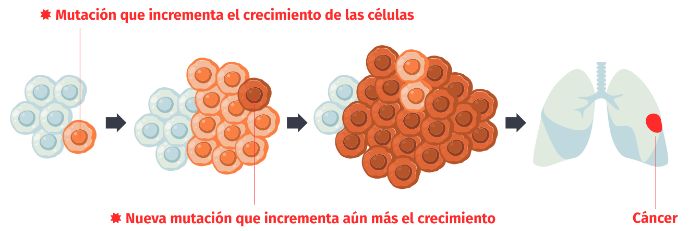

¿Qué es el cáncer?
El cáncer es un grupo de enfermedades caracterizado por la multiplicación descontrolada de algunas células de nuestro cuerpo. Si quieres entender mejor qué es el cáncer, sigue leyendo.
La célula

Para entender cómo se desarrolla el cáncer, es útil conocer mejor las células y su funcionamiento.
Las células de nuestro cuerpo contienen un núcleo donde se encuentra el ADN, el libro de instrucciones de la célula.
La célula lee el ADN en fragmentos concretos, como palabras, que se llaman genes. La mayoría de los genes contienen información para fabricar proteínas.
El ADN está escrito solo con cuatro letras (A, C, G, T). Las combinaciones de estas letras (por ejemplo, AAA o GTG) determinarán los bloques de construcción de las proteínas conocidos como aminoácidos. AAA codifica el aminoácido lisina (Lys), y GTG codifica el aminoácido valina (Val).
Las proteínas son las moléculas que se encargan de buena parte de los procesos celulares. Es decir, la célula funciona gracias a la acción de las proteínas que se forman siguiendo las instrucciones de los genes en el ADN.
Las mutaciones
La secuencia de letras del ADN puede acumular errores; estos se conocen como mutaciones.
De forma natural a lo largo de la vida, nuestras células acumulan mutaciones. Estas pueden aparecer por factores externos como el tabaco o la luz ultravioleta, o por factores internos como errores en la división celular.

Las células cuentan con mecanismos de reparación que corrigen muchas de estas mutaciones. Aun así, algunas se mantienen en el ADN.
Aunque es poco probable, a veces las mutaciones pueden afectar la secuencia de los genes y las proteínas. Si esto pasa, estas mutaciones pueden cambiar la función de las proteínas, haciendo que dejen de funcionar o que funcionen de manera diferente. Estos cambios pueden afectar incluso a cómo se comporta una célula.
Por ejemplo, el gen BRAF contiene información para construir la proteína BRAF. La proteína BRAF controla el crecimiento y la multiplicación celular.

Imaginemos que el gen BRAF incorpora una mutación que afecta a la secuencia de la proteína BRAF.
Esta mutación hace que la proteína BRAF sea más activa. Esto provoca que la célula empiece a crecer y dividirse más de lo habitual.
Los impulsores
Los cánceres contienen mutaciones que afectan los genes y proteínas implicados en el crecimiento y la muerte celular.
Las mutaciones que hacen que las células se multipliquen más rápidamente que sus vecinas se llaman mutaciones impulsoras del cáncer, y los genes y las proteínas que las contienen se llaman genes y proteínas impulsoras del cáncer.
Se ha estimado que la acumulación de entre 4 y 6 mutaciones impulsoras del cáncer es suficiente para dar lugar al cáncer.
Medicina personalizada
Identificar los impulsores del cáncer nos puede ayudar a encontrar tratamientos más adecuados para cada paciente.
El cáncer de cada paciente tiene una combinación diferente de mutaciones impulsoras. Según las mutaciones que contenga un tumor, este puede responder de manera diferente a los tratamientos disponibles.
Es decir, si identificamos la combinación de mutaciones impulsoras del cáncer en cada paciente, podremos elegir el tratamiento más beneficioso para cada persona.
Nuestra investigación
Identificar las mutaciones impulsoras del cáncer en el tumor de cada paciente es todo un reto. El ADN de las células cancerosas contiene miles de mutaciones, pero solo unas pocas son las que han impulsado el desarrollo de la enfermedad. ¿Cómo podemos encontrarlas?

01.
En primer lugar, necesitamos estudiar el ADN de los cánceres de miles de pacientes de todo el mundo para identificar sus mutaciones.

02.
A continuación, es necesario aplicar herramientas estadísticas para identificar los genes impulsores del cáncer. Cuantos más tumores analicemos, más precisos serán nuestros resultados.


03.
Para cada gen impulsor, usamos una herramienta de inteligencia artificial para identificar las mutaciones impulsoras.
04.
Todos estos datos, junto con información sobre la respuesta a tratamientos para cada mutación, han sido incorporados en el Cancer Genome Interpreter.
El Cancer Genome Interpreter es una herramienta para interpretar el conjunto de mutaciones presentes en el tumor de cada paciente y predecir qué terapia podría ser beneficiosa para tratarlo.

¿Quieres aprender cómo funciona?
¡Haz clic a continuación y empieza la simulación!